Overview
Stack 280 provides detailed information about the database and application server configurations needed to correctly install the following versions of ProcessMaker on the Microsoft Windows Server 2022 platform.
| ProcessMaker 3.7.2 - 3.7.x | ProcessMaker 3.8.x |
Stack 280 is supported by ProcessMaker, meaning that it has been tested by the Quality Control team.
Summary
| Platform | Database | PHP |
|---|---|---|
| Microsoft Windows Server 2022 | MySQL 8.0 | 7.4.x |
| Web Server | Filesystem | Architecture |
| Apache 2.4.x | NTFS | 64 bits |
Disclaimer
The stack procedure and references described below are used by ProcessMaker in its cloud environment and it works appropriately in cloud configurations. If this stack is implemented on-premises, ProcessMaker Inc. does not guarantee the stack functions correctly.
Environment
To prepare the environment before installing ProcessMaker, follow the steps listed below.
Step 1: Install MySQL Community Server 8
To download the MySQL 8 installer, follow the next steps:
-
Go to the link MySQL Community Server. The main page display.
-
In the Select Operating System, select "Microsoft Windows".
-
Click Go to Download Page.
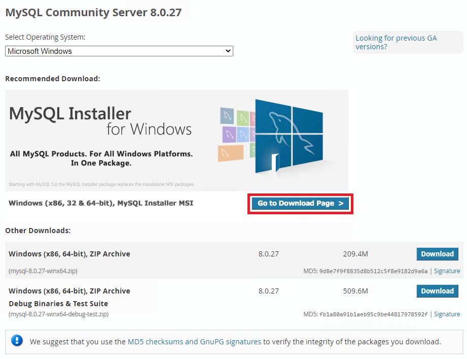
The MySQL Installer window displays.
-
Locate the full installer and click Download.
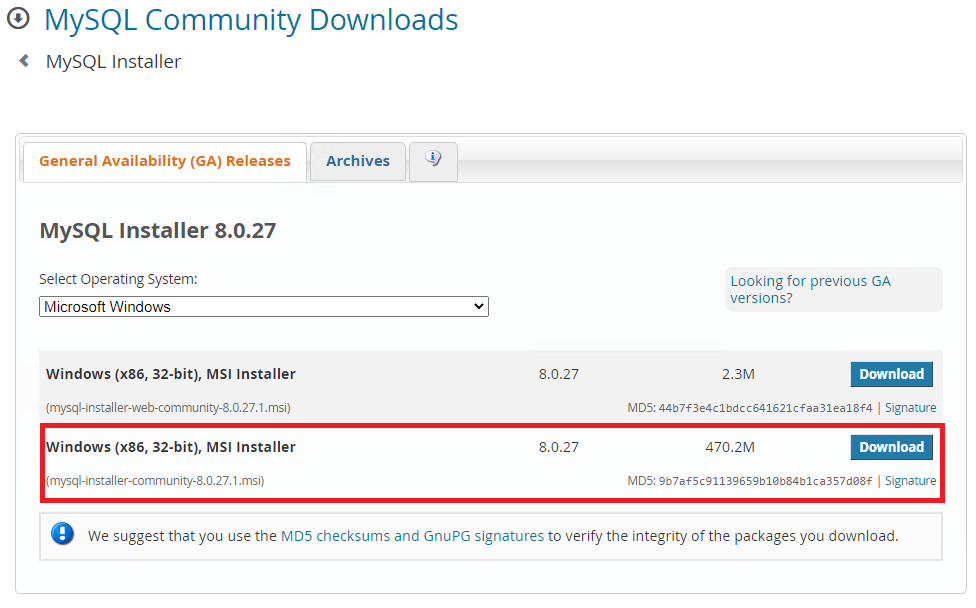
The MySQL Community Downloads login page displays.
-
Click No thanks, just start my download.
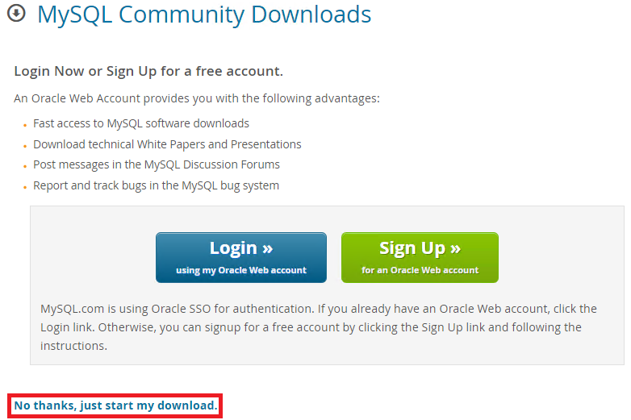
Run the installer and configure MySQL as the administrator. To install and configure MySQL properly for ProcessMaker, follow the next steps:
-
The Choosing a Setup Type screen displays. Choose the setup type according to the type of use. (Server only is generally recommended.) Click Next.
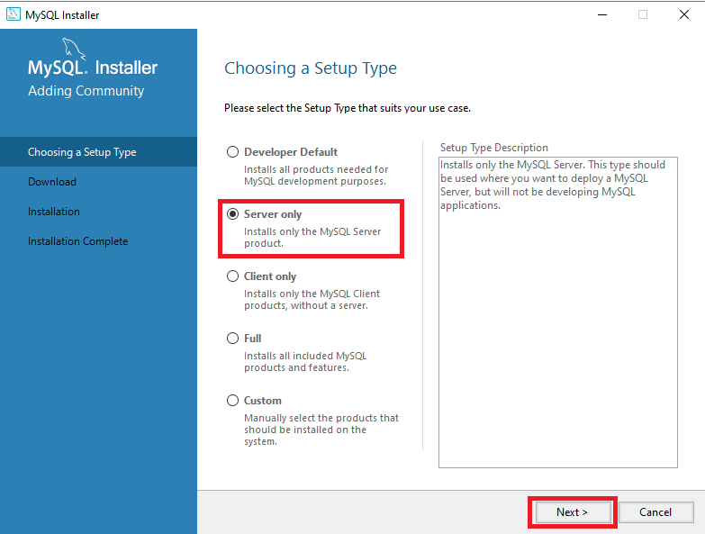
-
The Check Requirements screen displays. Check the requirements and click Execute to perform the installation of any missing dependencies.
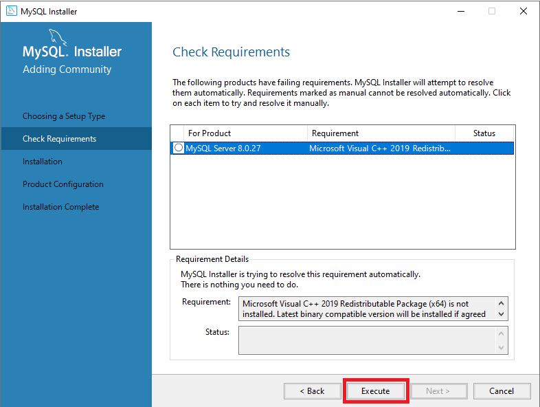
-
Agree to the license of each dependency, install it, and then click Close.
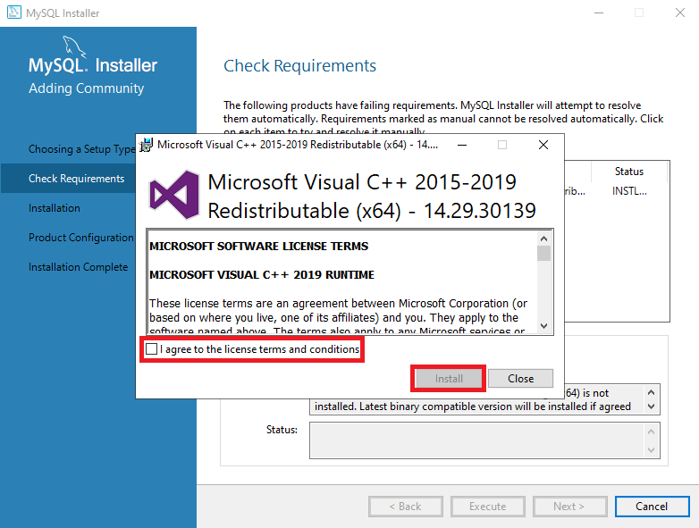
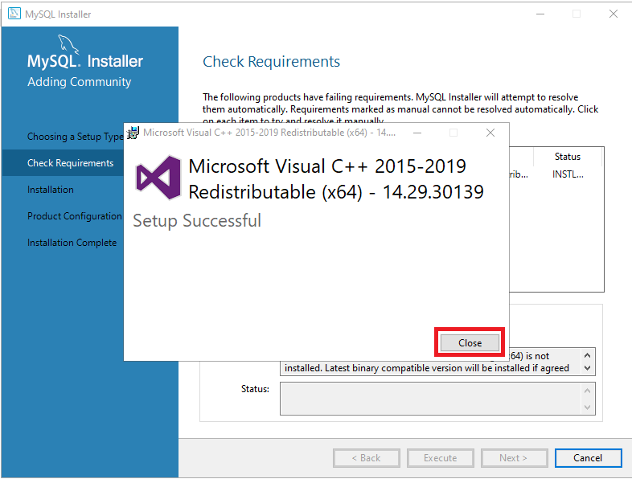
-
After the installation of the missing dependencies is completed, click Next.
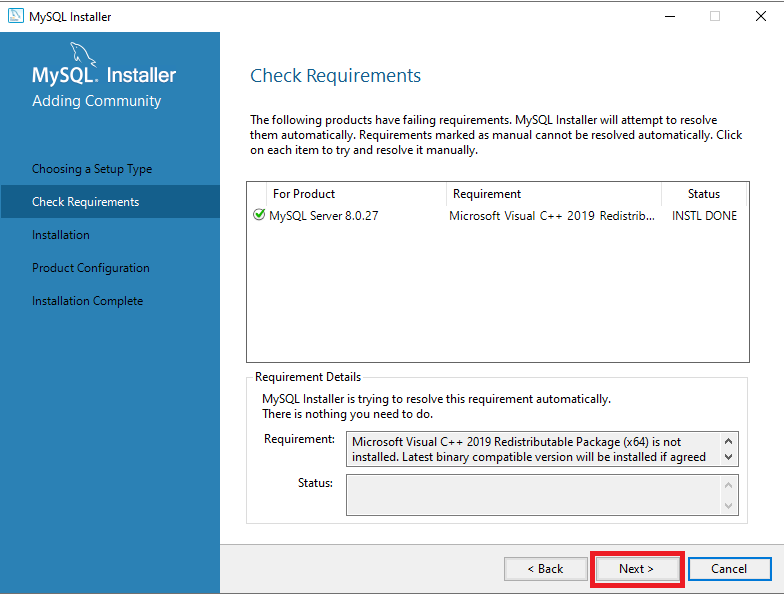
-
The Installation screen displays. Click Execute to run the MySQL installation.
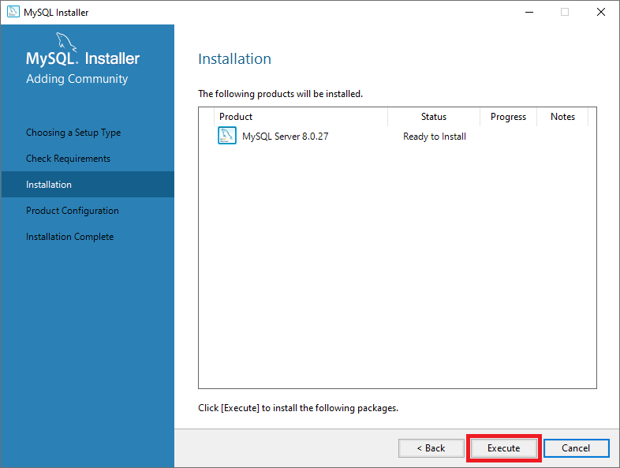
-
After the installation is done, the approved requirements displays. Click Next to complete the server configuration.
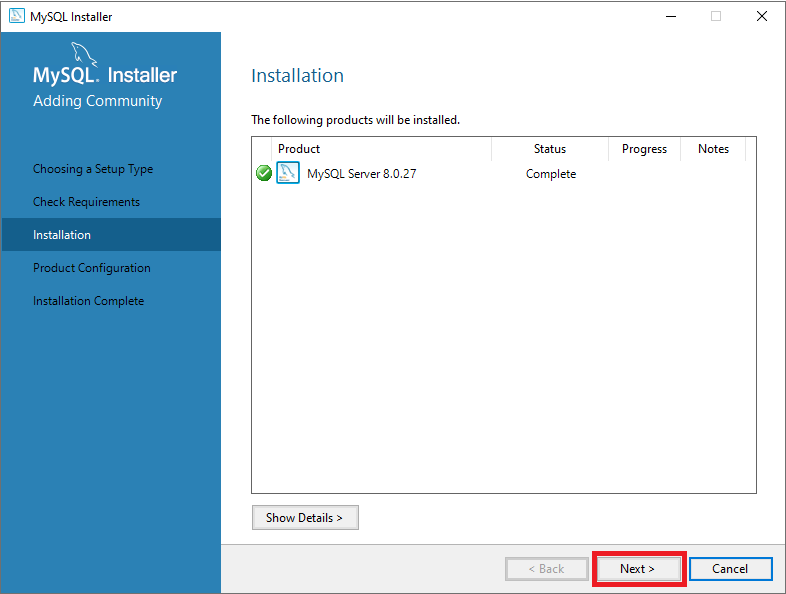
-
The Product Configuration screen displays. This screen begins a wizard to guide you through product configuration. Click Next.
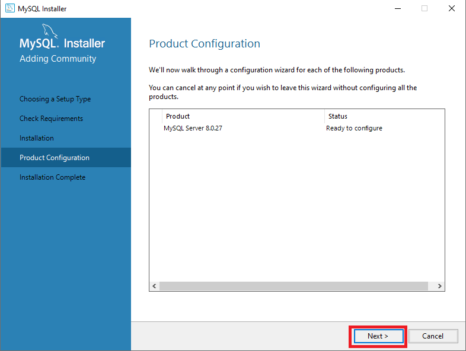
-
The Type and Networking screen displays. This screen displays default configuration settings. In the Config Type field, it is recommended to select Server Computer. Click Next.
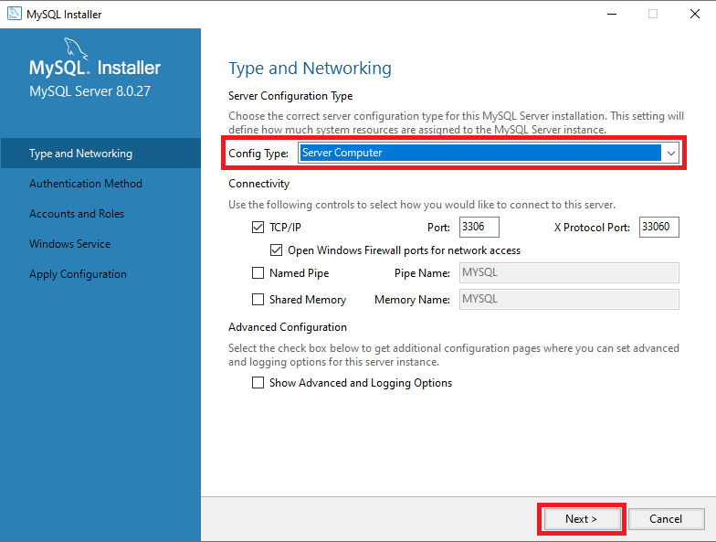
In the Config Type field, you can select:
- Development Computer if you just want to try ProcessMaker.
- Server Computer if ProcessMaker will be running along MySQL in the same server.
- Dedicated Computer if only MySQL is installed in the server. ProcessMaker will be hosted in another server.
-
The Authentication Method screen displays. It is recommended to select Use Legacy Authentication Method (Retain MySQL 5.x Compatibility) to maintain previous MySQL authentication method. Click Next.
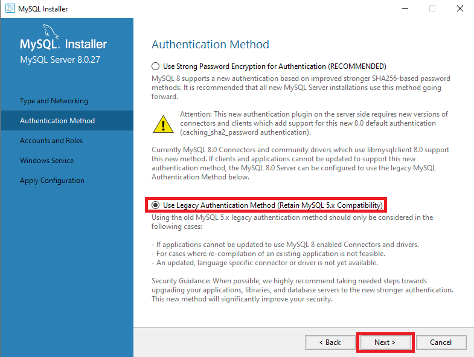
-
The Accounts and Roles screen displays. Follow these guidelines to use this screen:
- In the MySQL Root Password field, enter a strong password to use with the MySQL database synchronization and ProcessMaker. Make sure to remember it.
- In the Repeat Password field, repeat the previous password. The Password strength displays one of the following status: Streng, Medium, or Weak.
- To specify the additional user(s) that have privileges to administer the MySQL database, click Add User.
- Select an added user and then click the drop-down menu to select which MySQL privilege(s) that user has.
- After the optional users have been added and their privileges configured, click Next.
For more information about the Accounts and Roles step, visit the page MySQL reference manual.
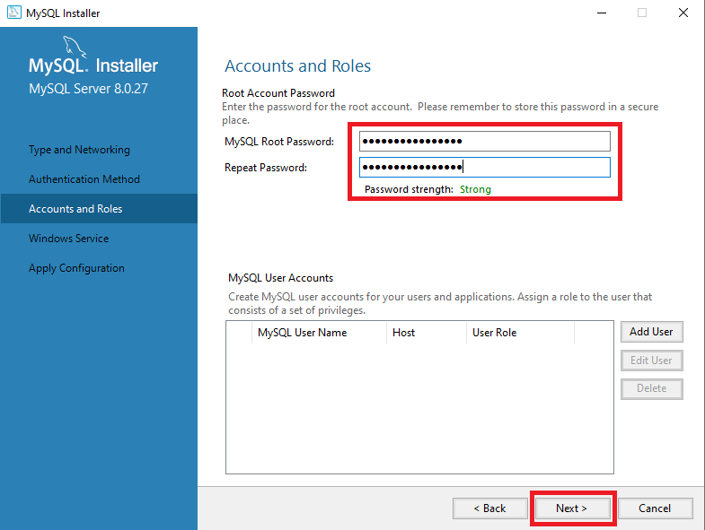
-
The Windows Service screen displays. Select the Configure MySQL Server as a Windows Service and Start the MySQL Server at System Startup checkboxes. Select the Standard System Account. Click Next.

-
The Apply Configuration screen displays. To apply the configuration, click Execute.
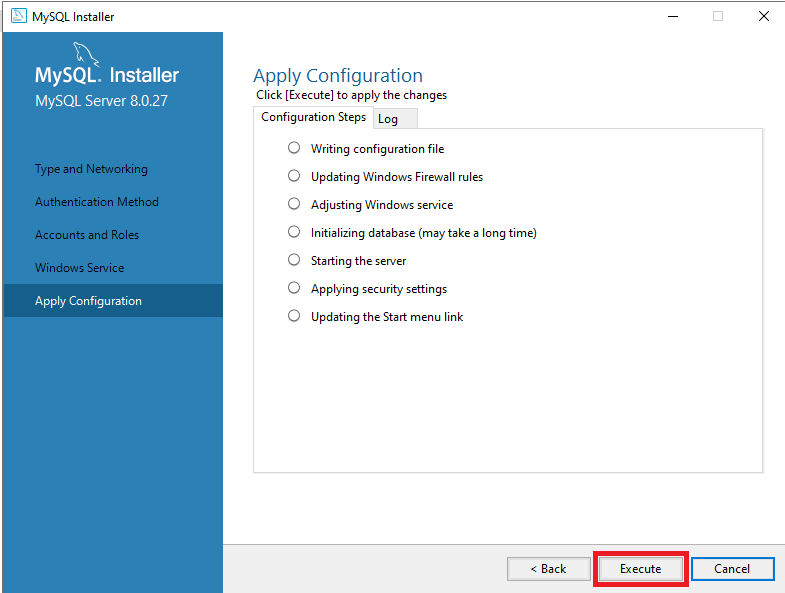
-
After the configuration is completed, click Finish.
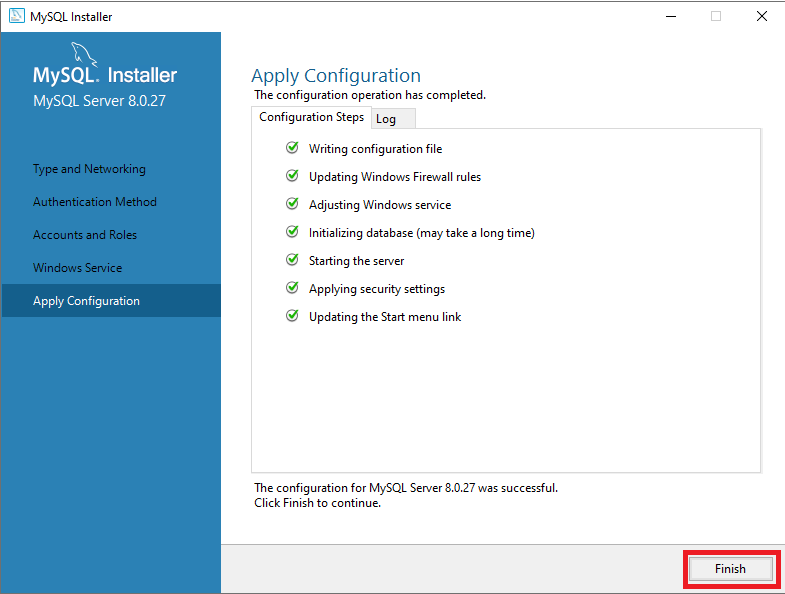
-
The Product Configuration screen displays again. Click Next.
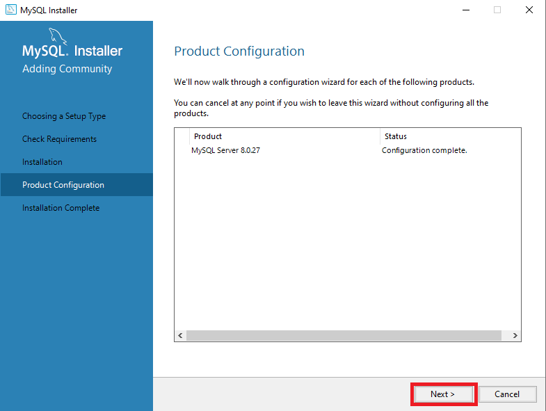
-
The Installation Complete screen displays. Click Finish. The MySQL installation is complete.
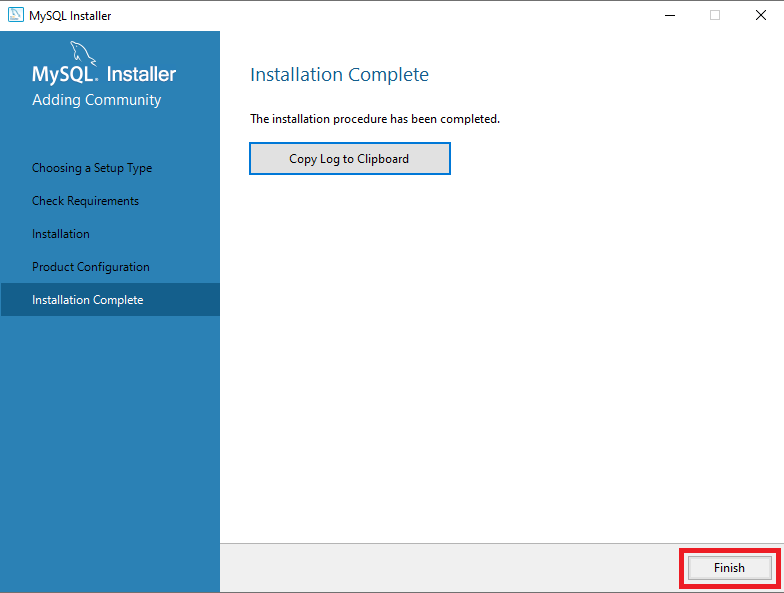
Additional Configuration on MySQL
After you have installed MySQL, open the file my.ini to optimize the database. By default my.ini is located on the path C:\ProgramData\MySQL\MySQL Server 8.0 or where you have installed MySQL. For more information, see Additional Configuration. Follow the next steps:
-
Go to the path
C:\ProgramData\MySQL\MySQL Server 8.0. -
Open my.ini with some text editor.
-
Add the following lines at the end of the my.ini file and then save the file:
#Disabling MySQL Strict Mode on the Server #sql-mode= "STRICT_TRANS_TABLES,NO_ZERO_IN_DATE" sql-mode="" #default_authentication_plugin=caching_sha2_password default_authentication_plugin = mysql_native_password #Turn off Derived Table Merging Flags optimizer_switch = derived_merge=off
Step 2: Install Apache 2.4
To install Apache 2.4 in ProcessMaker, follow the next steps:
Download the Apache 2.4.x VC14 binary file (64-bit version) from the Apache Haus or Apache Lounge page.
- Apache Haus:
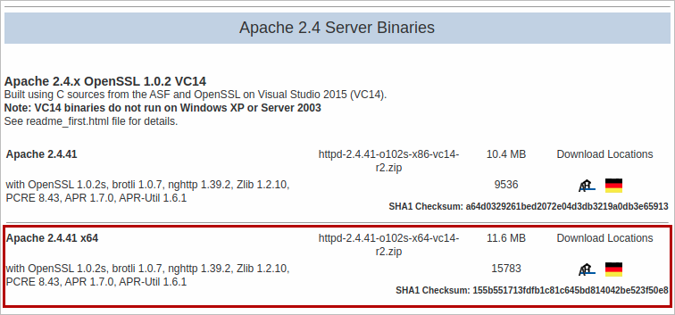
- Apache Lounge:
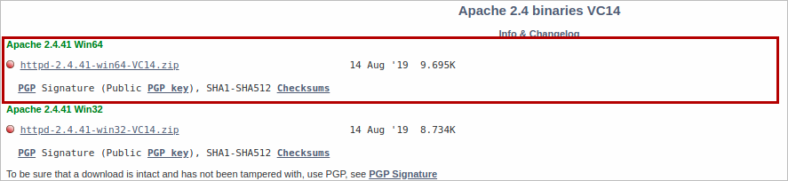
- Apache Haus:
After downloading Apache 2.4, create a folder with the name opt and extract the httpd-2.4.35-x64-vc11.zip file to
C:\opt.Before installing Apache, edit the Apache file httpd.conf located at
C:\opt\Apache24\conf\httpd.conf.Change the lines:
Define SRVROOT "/Apache24" ServerRoot "${SRVROOT}" To:
Define SRVROOT "C:/opt/Apache24" ServerRoot "${SRVROOT}" Save the changes and close the httpd.conf file.
Add the Apache path to the Windows environment variables. Run cmd.exe as administrator and execute the following command:
setx /M PATH %PATH%;C:\opt\Apache24\bin In the command line (Remember to run cmd.exe as administrator), proceed to install Apache.
cd C:\opt\Apache24\bin httpd -k install httpd -k start To enable the necessary modules for ProcessMaker, we need to run as administrator the following commands:
cd C:\opt\Apache24\conf\ powershell -Command "(gc httpd.conf) -replace '#LoadModule alias_module modules/mod_alias.so', 'LoadModule alias_module modules/mod_alias.so' | Out-File -Encoding UTF8 httpd.conf" powershell -Command "(gc httpd.conf) -replace '#LoadModule deflate_module modules/mod_deflate.so', 'LoadModule deflate_module modules/mod_deflate.so' | Out-File -Encoding UTF8 httpd.conf" powershell -Command "(gc httpd.conf) -replace '#LoadModule expires_module modules/mod_expires.so', 'LoadModule expires_module modules/mod_expires.so' | Out-File -Encoding UTF8 httpd.conf" powershell -Command "(gc httpd.conf) -replace '#LoadModule rewrite_module modules/mod_rewrite.so', 'LoadModule rewrite_module modules/mod_rewrite.so' | Out-File -Encoding UTF8 httpd.conf" powershell -Command "(gc httpd.conf) -replace '#LoadModule vhost_alias_module modules/mod_vhost_alias.so', 'LoadModule vhost_alias_module modules/mod_vhost_alias.so' | Out-File -Encoding UTF8 httpd.conf" powershell -Command "(gc httpd.conf) -replace '#LoadModule headers_module modules/mod_headers.so', 'LoadModule headers_module modules/mod_headers.so' | Out-File -Encoding UTF8 httpd.conf" powershell -Command "(gc httpd.conf) -replace '#LoadModule filter_module modules/mod_filter.so', 'LoadModule filter_module modules/mod_filter.so' | Out-File -Encoding UTF8 httpd.conf" powershell -Command "(gc httpd.conf) -replace '#LoadModule access_compat_module modules/mod_access_compat.so', 'LoadModule access_compat_module modules/mod_access_compat.so' | Out-File -Encoding UTF8 httpd.conf" powershell -Command "(gc httpd.conf) -replace '#LoadModule authnz_ldap_module modules/mod_authnz_ldap.so', 'LoadModule authnz_ldap_module modules/mod_authnz_ldap.so' | Out-File -Encoding UTF8 httpd.conf" powershell -Command "(gc httpd.conf) -replace '#LoadModule ldap_module modules/mod_ldap.so', 'LoadModule ldap_module modules/mod_ldap.so' | Out-File -Encoding UTF8 httpd.conf" powershell -Command "(gc httpd.conf) -replace '#LoadModule ssl_module modules/mod_ssl.so', 'LoadModule ssl_module modules/mod_ssl.so' | Out-File -Encoding UTF8 httpd.conf" Restart the Apache service in the Service Manager or by using the following command in the console.
cd c:\opt\Apache24\bin httpd -k restart
Step 3: Install PHP 7.4
To download the PHP binary file, click the PHP Download link and download a similar zip file, php-7.4.XX-Win32-vc15-x64.zip, with the last PHP version.
To install PHP 7.4, follow the next steps:
Decompress the
.zipfile content inC:\opt, and rename the PHP folder asC:\opt\php.In the
C:\opt\php, change the name of the file php.ini-development to php.ini.
Reopen the Apache file httpd.conf located at
C:\opt\Apache24\conf\httpd.conf, and add the following lines to the end of the file.LoadModule php7_module "c:/opt/php/php7apache2_4.dll" AddHandler application/x-httpd-php .php PHPIniDir "C:/opt/php" Do these changes in the php.ini file.
- Set the following configurations:
short_open_tag = On post_max_size = 24M upload_max_filesize = 24M date.timezone = America/New_York expose_php = Off memory_limit = 256M extension_dir = "c://opt/php/ext/" extension=bz2 extension=curl extension=fileinfo extension=gd2 extension=gettext extension=gmp extension=imap extension=ldap extension=mbstring extension=exif ; Must be after mbstring as it depends on it extension=mysqli extension=openssl extension=pdo_mysql extension=pdo_odbc extension=pdo_sqlite extension=shmop extension=soap extension=sockets extension=sqlite3 extension=xsl zend_extension=opcache - Add or set the following configuration for opcache:
expose_php = Off ; Determines if Zend OPCache is enabled for the CLI version of PHP opcache.enable_cli=0 ; The maximum number of keys (scripts) in the OPcache hash table. ; Only numbers between 200 and 100000 are allowed. opcache.max_accelerated_files=10000 ; The maximum percentage of "wasted" memory until a restart is scheduled. opcache.max_wasted_percentage=5 ; When this directive is enabled, the OPcache appends the current working ; directory to the script key, thus eliminating possible collisions between ; files with the same name (basename). Disabling the directive improves ; performance, but may break existing applications. opcache.use_cwd=1 ; When disabled, you must reset the OPcache manually or restart the ; webserver for changes to the filesystem to take effect. opcache.validate_timestamps=1 ; If enabled, a fast shutdown sequence is used for the accelerated code opcache.fast_shutdown=1 - Save the changes and close the php.ini file.
- Set the following configurations:
Copy and paste the DLL files: libssh2.dll, libsasl.dll, libcrypto-1_1-x64.dll, and libssl-1_1-x64.dll to System32 and SysWOW64 directories.
Add the PHP path to windows environment variables by running cmd.exe as administrator, and run the following command:
setx path "%path%";"C:\opt\php" exit Stop and start the Apache service to apply the previous changes to the php.ini and httpd.conf. Run the following command in the console.
cd C:\opt\Apache24\bin httpd -k stop httpd -k start
Step 4: Install and Configure NSSM
To install and configure the NSSM Supervisor, follow the next steps:
Note: Check if ProcessMaker files have the correct owner and permissions.
Download the latest version of the NSSM application from https://nssm.cc/download.
After decompressing the contents of the zip file, copy the nssm.exe file to the folder C:\opt\. This file could be placed anywhere, but it is recommended to place all related to ProcessMaker in the same place.
Open the Windows console as administrator and go to C:\opt\.
Run the command.
nssm install processmaker-jobs-<WORKSPACE> Specify the workspace where the jobs will run. For example:
nssm install processmaker-jobs-workflow The last command displays a window with several tabs. Go to the Application tab.
- In the Path field, enter the path where the PHP executable is located, usually C:\opt\php\php.exe.
- In the Startup directory field, enter the path where ProcessMaker is installed, usually C:\opt\processmaker.
- In the Arguments field, enter the queue command specifying the workspace.
processmaker artisan queue:work --workspace=<WORKSPACE>
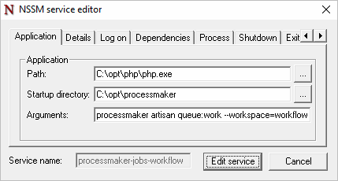
Go to the Details tab. In the Display name field, enter ProcessMaker Jobs for <WORKSPACE>. This value helps ProcessMaker identifies jobs easily in the Windows Services Panel.
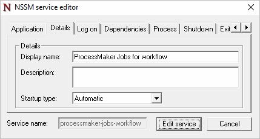
Save the configuration. It is not necessary to modify the other fields.
Start the service by running the following command.
nssm start processmaker-jobs-<WORKSPACE> Specify the workspace, for example:
nssm start processmaker-jobs-workflow Alternatively, you can open the Windows Services Panel, look for the created service and stop and start it:

Depending on the Company’s security policies, additionally, in the Log on tab, you can configure the account that will run the service.
Recommended Step - Tuning Server
It is recommended to modify the hosts that is located at C:\Windows\System32\drivers\etc\hosts:
To apply changes, restart the network services.
Also is recommended to be sure in php.ini, the following value max_execution_time = 60.
Database Integrations
This stack supports the following database integrations:
Oracle
To install an Oracle database integration, follow the next steps:
Log on an Oracle account and download the Oracle client for Windows by clicking this link.
Unzip this file and copy the content in the System32 and SysWOW64 folders.
In the C:\opt\php\php.ini file, uncomment the following lines:
extension=php_oci8_12c.dll ; Use with Oracle Database 12c Instant Client extension=php_pdo_oci.dll Restart the services.
Microsoft SQL Server
To install a Microsoft SQL Server database integration, follow the next steps:
Download the libraries from the Microsoft page and install the file.
In the C:\opt\php\php.ini file, add the following lines:
;;;;;;;;;;;;;;;;;;; ; SQL SERVER EXT ; ;;;;;;;;;;;;;;;;;;; extension=C:\opt\php\ext\php_pdo_sqlsrv_73_ts_x64.dll; extension=C:\opt\php\ext\php_sqlsrv_73_ts_x64.dll; Restart the services.
PostgreSQL
To install a PostgreSQL database integration, follow the next steps:
-
In the C:\opt\php\php.ini file, add the following lines:
extension=pdo_pgsql; extension=php_pgsql; -
Restart the services.
ProcessMaker Installation
Read Install ProcessMaker to learn how to install ProcessMaker.